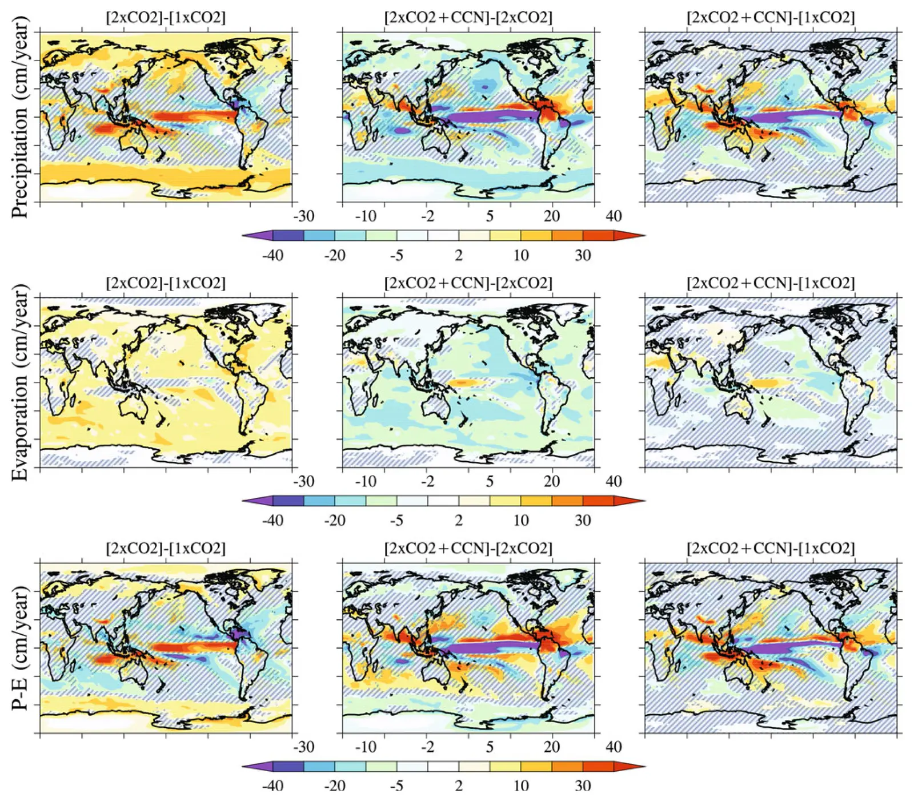

Albedo enhancement of marine clouds to counteract global warming: impacts on the hydrological cycle
Key finding. Uniformly reducing marine cloud droplet size enough to offset the warming from doubled carbon dioxide lowers global mean precipitation and evaporation by about 1.3%, yet raises runoff over land by 7.5%, chiefly over tropical land.

What question did this research address?
Reducing sunlight cools the planet but dries it, because sunlight drives evaporation more strongly per degree than carbon dioxide does. Solar geoengineering is therefore expected to slow the water cycle and cut runoff over land.
Marine cloud brightening is different in one respect that might matter: it dims only the ocean. This paper asked whether confining the intervention to the sea changes what happens to water on land.
What did we find?
The experiment uses an atmospheric general circulation model coupled to a mixed-layer ocean, with cloud droplets shrunk uniformly over all oceans until the global mean temperature increase from doubled carbon dioxide is offset.
Globally the expected drying appears: precipitation and evaporation both fall by about 1.3%.
Land does the opposite. Runoff over land rises 7.5%, concentrated over tropical land — the reverse of what a uniform dimming would produce.
The mechanism is circulation, not local energy balance. More reflective marine clouds cool the atmospheric column over the ocean, which sets up sinking motion over the sea and compensating rising motion over land.
That rising motion over land is what the increased runoff is attributed to.
Why does it matter?
It shows that where you dim matters as much as how much you dim. A spatially uniform reduction in sunlight and an ocean-only one have opposite consequences for land water, even at the same global mean temperature.
The result complicates a standard objection. Solar geoengineering is criticised for drying the land, and this particular scheme does not — though it achieves that by distorting the circulation rather than by leaving it alone.
Because the effect is concentrated over tropical land, the regions affected are those where runoff changes bear most directly on agriculture and water supply.
Citation, data, and code
Govindasamy Bala, Ken Caldeira, Rama Nemani, Long Cao, George Ban-Weiss, and Ho-Jeong Shin (2011). Albedo enhancement of marine clouds to counteract global warming: impacts on the hydrological cycle. Climate Dynamics 37, 915-931.
Related
- Could reflecting sunlight substitute for reducing carbon dioxide?
- Simultaneous stabilization of global temperature and precipitation through cocktail geoengineering (Cao et al., 2017)
- Comparison of the fast and slow climate response to three radiation management geoengineering schemes (Duan et al., 2018)
- Fast versus slow response in climate change: implications for the global hydrological cycle (Bala et al., 2010)